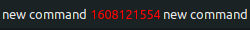
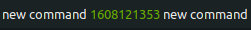
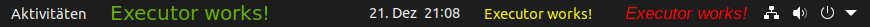

Configuration #
Use of custom css #
It is possible to use custom css to style the output of your commands dynamically. There are two ways to do this:
-
Preferred option: Create the file
~/.config/executor@raujonas.github.io/custom.cssand add your custom css there. This file will be imported into the extension. This way your custom css will NOT be overwritten by extension updates. You can use the following commands to create the file:mkdir /home/$USER/.config/executor@raujonas.github.io touch /home/$USER/.config/executor@raujonas.github.io/custom.css -
Non durable option: You can add your custom css in
~/.local/share/gnome-shell/extensions/executor@raujonas.github.io/custom.css. Your custom css will be overwritten by extension updates in this case. Make sure to save it somewhere before updating.
Example custom.css file:
.red {
color: red;
}
.yellow {
color: yellow
}
.green {
color: rgb(107, 179, 0);
}
.huge-font {
font: 20px "Comic Sans";
}
.italic {
font: 17px "Arial";
font-style: italic;
}
Note: After making changes in your css you have to restart your shell (Alt + F2 and then enter r).
Usage: To use the css classes dynamically in your commands, you can add it with the following syntax to your output: <executor.css.red>. This will add the specified css class to your output, in this case red.
Example: The following command queries the current timestamp. If the output is a round number it should have the color red, if not then green.
date +%s | awk '{if ($1 % 2 == 0) {print $1"<executor.css.red>"} else { print $1"<executor.css.green>"} }'
The output is either one of the following depending on the timestamp:
 You can also combine multiple css classes:
